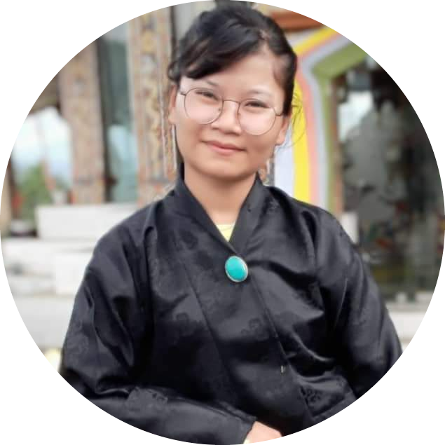

|  | Name: Choki Wangmo Date of Birth: 02.02.1994 Contact No: 77941054 CID No: 11004001570 Contact Address: Technical training institute Chumig, Bumthang Email Address: wangmochoki2@gmail.com |
Currently I am working as Asst.Lecturer in one of the Techinical Institute and serving as Mathematics Teacher. As a part of management, I served as matron & Mess In-charge for two and half years before maternity. Currently I work as Account Focal of the institute apart from my core teaching.I joined the service in 2019 after appearing RCSC(rank:4th from B.ed Sec. Physics & Mathematics).
| Qualification | Year Of Graduation | College/School | Board/University | Marks Obtained |
| B.Ed in physics and mathematics | 2014-2018 | Samtse college of Education | Royal University of Bhutan | 71.89% |
| XII- Science | 2013 | Punakha Higher Secondary school | BHSCE | 63.6% |
| X-General | 2011 | Tashidingkha Middle Secondary School | BHSCE | 71% |
Participated in a research conference and paper presentation at samtse college of education on the topic dialogic pedagogy in mathematics.